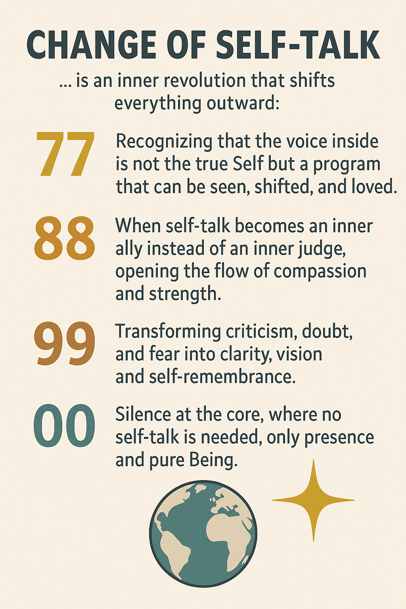

Die innere Stimme erhebt sich
Jede und jeder trägt eine Stimme im Inneren – das Selbstgespräch. Mit dem Wandel der Frequenz 77 99 verwandelt sich das alte Echo der Zweifel in den neuen Gesang der Freiheit.
Hier beginnt die Revolution: Im eigenen Wort, im eigenen Klang, im eigenen Sein. Die Wahrheit spricht durch uns – klar, lichtvoll, unverfälscht.